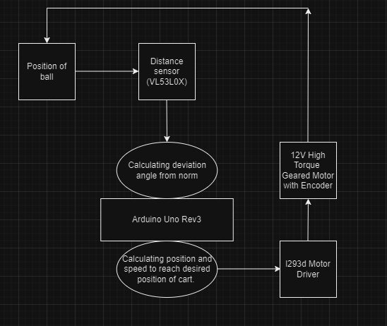
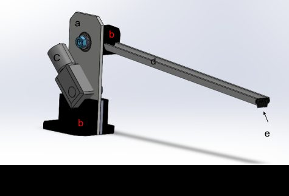
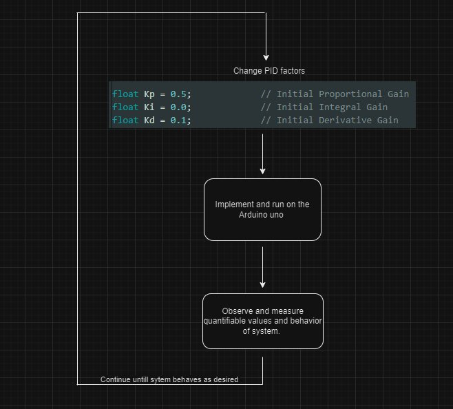
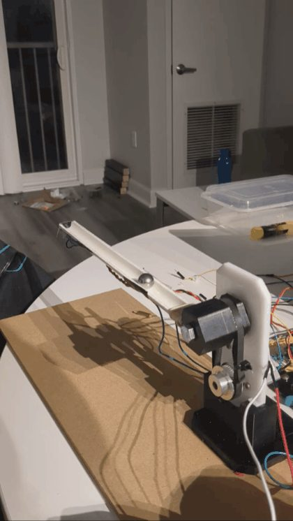

Ball & Beam Balance System
A ball resting on a horizontal beam is inherently unstable — left alone, gravity rolls it off the edge. This system keeps it centered in real time: a time-of-flight sensor tracks the ball's position, and a PID loop on an Arduino continuously re-angles the beam to correct it. The beam dynamics were modeled from Newton's second law before any control code was written, then built from laser-cut acrylic, 3D-printed brackets, and a PVC beam driven through a GT2 pulley system.
An Arduino Uno runs a PID loop that reads the ball's position every cycle and adjusts beam angle to recenter it, starting from gains of Kp 0.5, Ki 0.0, Kd 0.1 and tuned iteratively from there.
A VL53L0X distance sensor measures how far the ball is from center along the beam channel, feeding that position error straight into the control loop.
Before writing any control code, we derived the ball's motion (m·ẍ = −mg·sin θ) and the beam's rotation about its pivot (I·θ̈ = mg·x·cos θ) from Newton's second law, so the PID design was grounded in the actual dynamics rather than trial and error.
The system moves through an idle state, a three-stage balancing sequence — ball detection, angle adjustment, stabilizing — and an emergency-stop/error state that catches sensor failures or a manual stop and routes back to a resolving step.
Laser-cut acrylic (0.01mm tolerance) formed the flat structural plates, 3D-printed parts handled the more complex geometry, and a hand-cut PVC pipe became the beam's ball channel — driven by a 12V JGY-370 motor and gearbox through a GT2 belt and pulley on a press-fit bearing.



